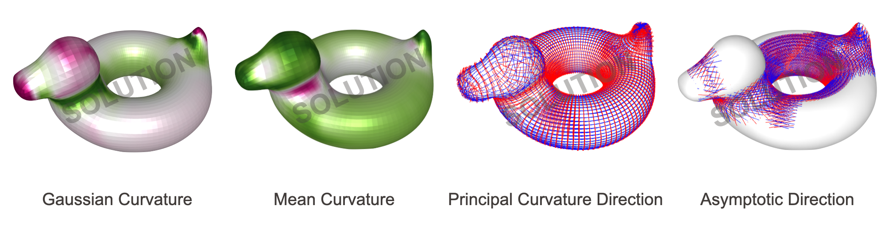
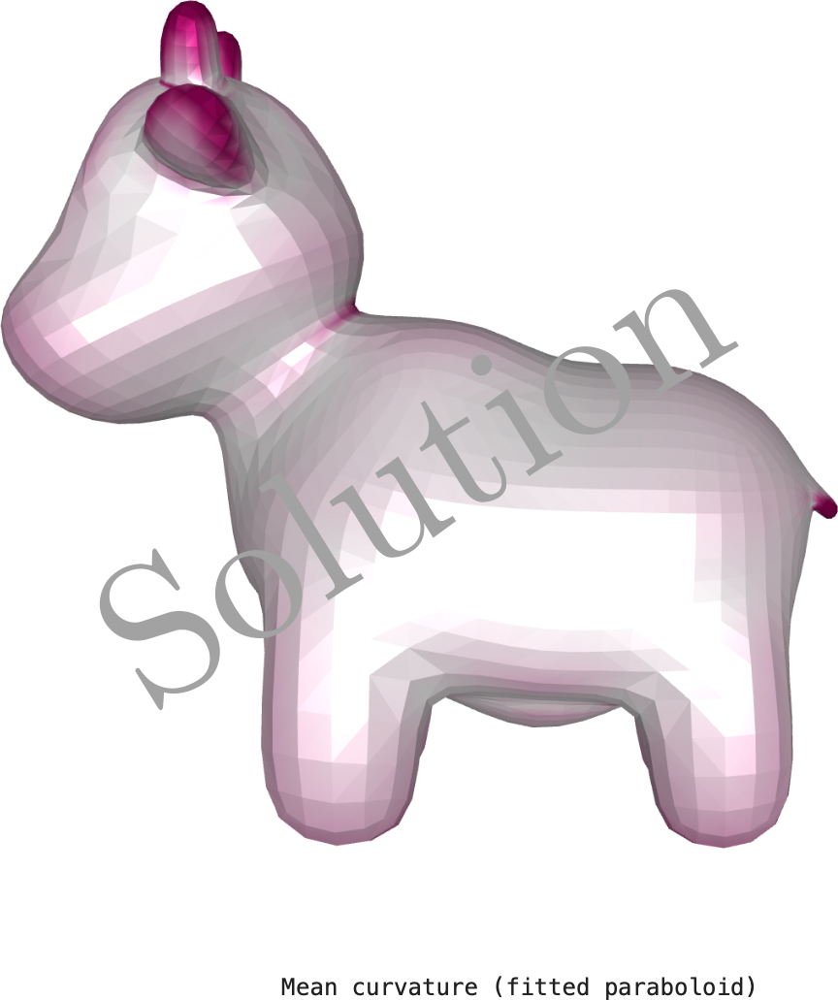
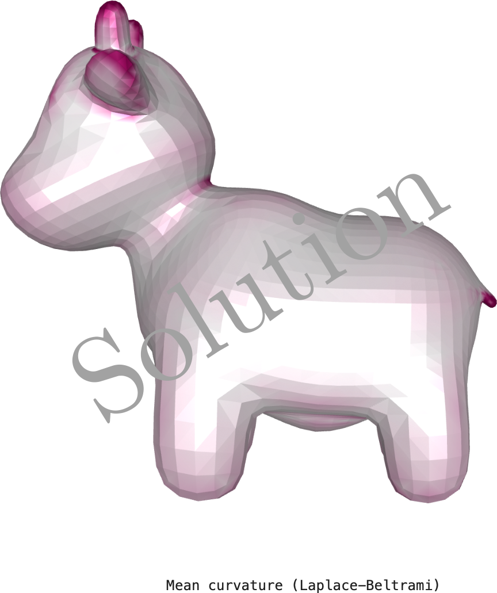

**Homework 2.2**
Student name:
Sciper number:
About this template
===================
For an overview of Markdeep and its syntax, see the [official demo document](https://casual-effects.com/markdeep/features.md.html) and the associated [source code](https://casual-effects.com/markdeep/features.md.html?noformat).
This template is based on the one used in CS440 - Advanced Computer Graphics.
Exercise writeup
================
(##) 2.4.1 Mesh curvature via quadratic fitting
Add your results here:

(##) 2.4.2 Check the cotangent formula
Report your computations here
(##) 2.4.3 Compute the cotan Laplacian matrix
$$
M =
\begin{bmatrix}
? & & & \\
& ? & & \\
& & ? & \\
& & & ?
\end{bmatrix}
$$
$$
S =
\begin{bmatrix}
? &? &? &? \\
? &? &? &? \\
? &? &? &? \\
? &? &? &?
\end{bmatrix}
$$
$$
L = M^{-1} S =
\begin{bmatrix}
? &? &? &? \\
? &? &? &? \\
? &? &? &? \\
? &? &? &?
\end{bmatrix}
$$
Please use appropriate symbols to indicate non-integer numbers (e.g. $\sqrt 3$, not $1.7320508$).
(##) 2.4.4 Mean curvature (paraboloid and Laplace-Beltrami))
Add the results for the duck mesh here:


Add your comments here (a few lines should be sufficient).
Feedback (Optional)
===================
Use this section to provide feedback about the assignment. We would appreciate any comments or criticism to improve the projects in future years. This section is not graded.
Examples of information that is useful to us includes:
* Were the instructions clear?
* How much time did you spend on the assignment?
* What advice should we have given you before you started?
* What was hard or surprising about the assignment?
* What did you like or dislike? What else would you change?
Your comments
-------------
...